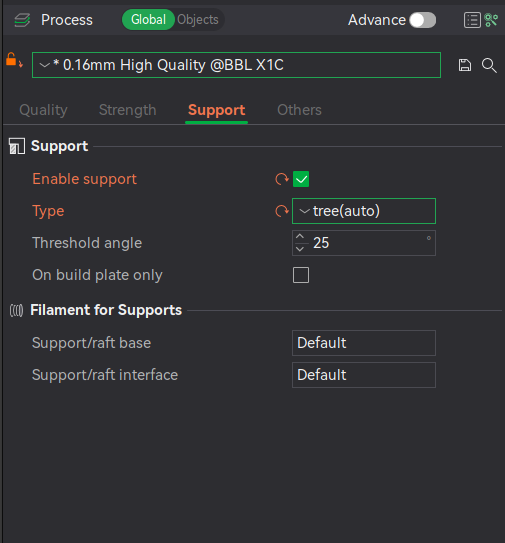

Support
Support, eller støttemateriale, er strukturer som printes med hensikt om å støtte opp modellen der man ellers ville ha risikert å printe i "løse luften". De fleste 3D-printere har en praktisk grense ved 45 grader overheng.
Hvis det skal printes med support så anbefaler jeg å bruke innstillingene vist i dette bildet:

Det er ikke så farlig med hvilken kvalitetsinnstilling man velger (i dette tilfellet 0.16mm High Quality), men innstillingene under Support-fanen vil trolig dekke de fleste tilfeller.
Ting å tenke på
- Trenger jeg virkelig support?
- Ofte kan man slippe unna å bruke support ved å rotere modellen, og eventuelt dele den opp i flere deler. Ikke bare vil dette gjerne spare tid, men man vil også ende opp med en penere overflate på printen.
- Hva slags support burde jeg bruke?
- Det anbefales å bruke "tree"-support ettersom dette både er raskt å printe samt enklere å fjerne en "normal"-support.
- Hvordan vet jeg om jeg trenger support?
- Bambu Studio vil som oftest si ifra om at det finnes områder med overheng uten noen form for støtte under. I tillegg vil man kunne se forskjellige fargekoder etter slicing som indikerer spesielt overhengende/utsatte områder som man burde vurdere om trenger support. Det finnes noen tilfeller der man ikke trenger support selv om det er 100% overheng, se gjerne en av de 3D-printede båtene som står på printerrommet: disse er printet uten support.
- Bambu Studio genererer sjukt mye support, selv på steder jeg ikke tror trenger det.
- Bambu Studio har støtte for å automatisk generere support, for å generere support med "hint" fra bruker, og for å utelukkende generer support fra byggeplata og opp til overheng. Sistnevnte er grei å bruke hvis man har detaljer som henger over byggeplata som man ønsker å støtte opp, men også hvis det finnes detaljer med overheng over modellen som man ikke ønsker å generere support for.